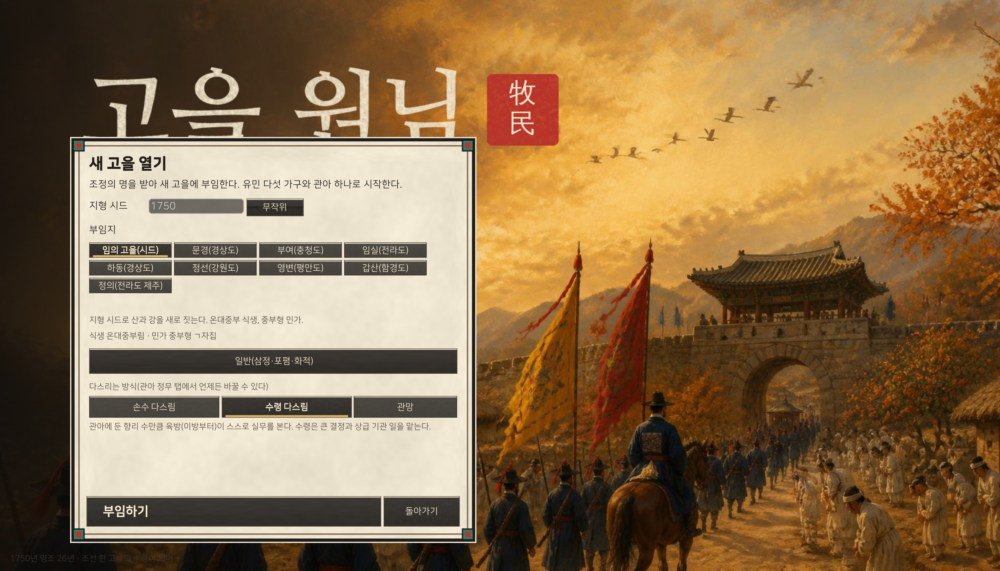
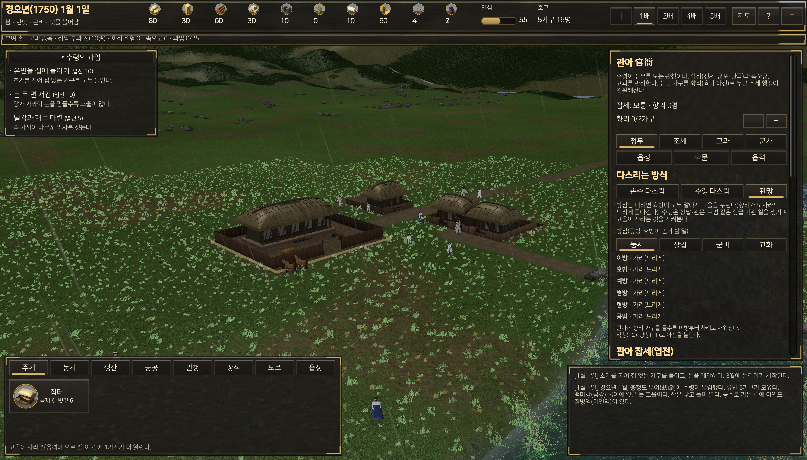
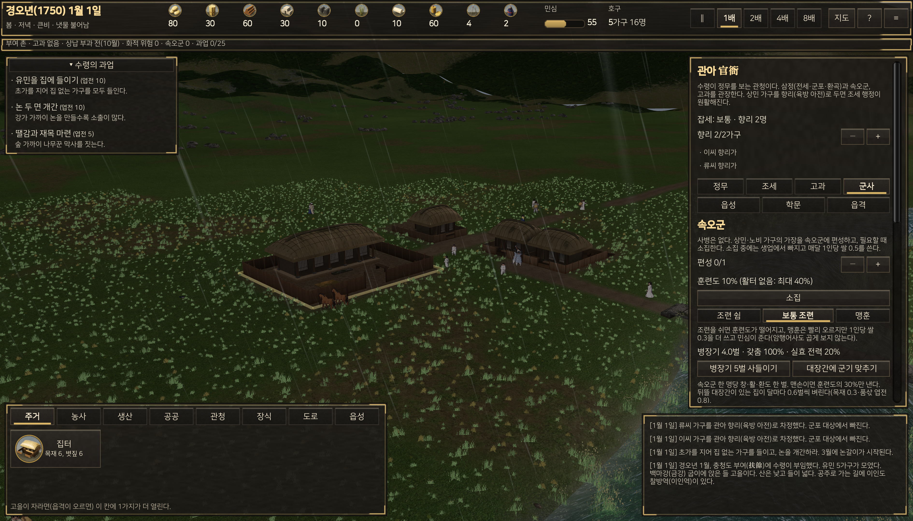
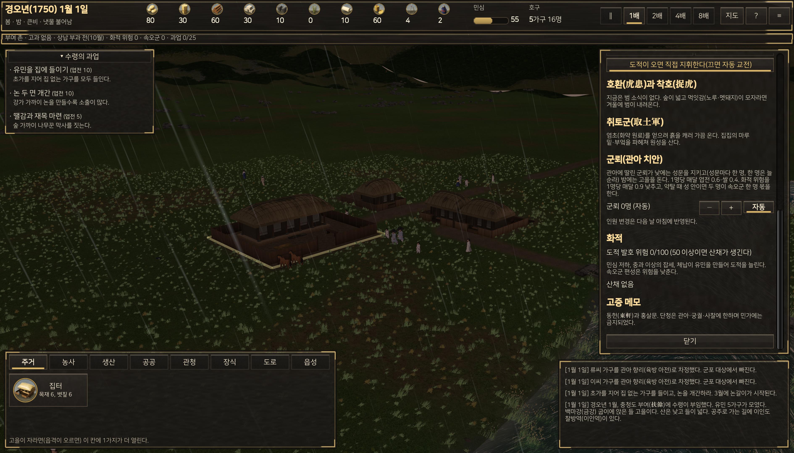
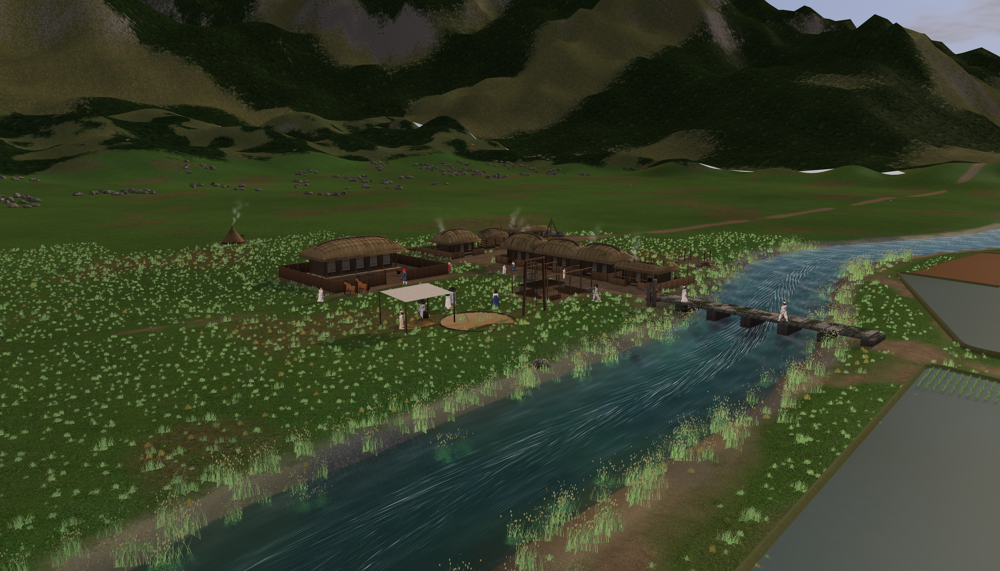
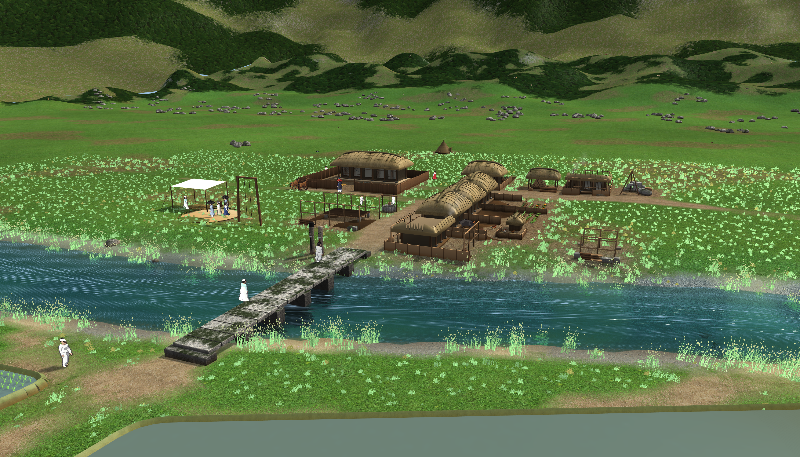

본인 매너로드류 게임 좋아해서 조선시대풍 매너로드 만들어달라고 하니까 기존에 같이 하던 플젝이 있어서 그런가.. 하루정도 하니까 점점 플레이할만함
게임을 만드는 행동을 하는데에 토큰을 태우는 날도 있는데 이게 진짜 재미인듯.. 내가 하고싶은 게임 내가 만들면서 그 과정도 게임으로 즐긴다는게
결론 : 요구사항을 더 잘 파악하는건 클로드인듯...
그와 별개로 조선형 매너로드 목민심서 기달리는중
중국하고 이탈리아 버전은 이미 나오고있고